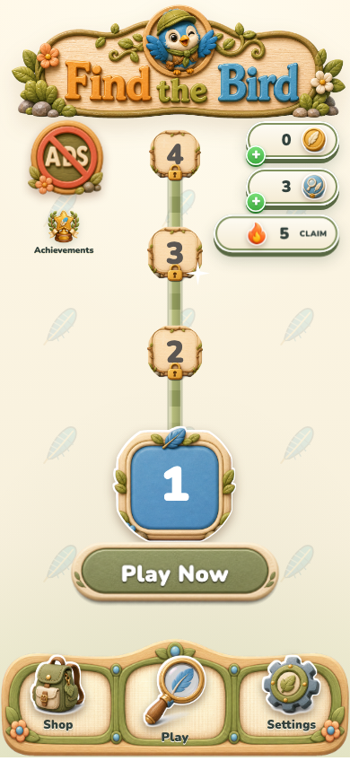
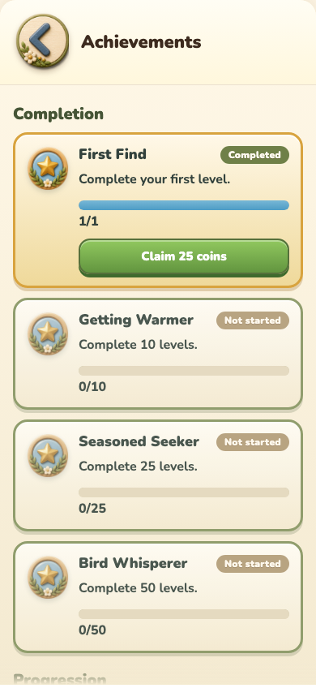

Streak cadence
Coins ramp for the first four days, then settle at 50 per day. Every fifth day also grants one hint.
Day 1 · 10Day 2 · 20Day 3 · 30Day 4 · 40Day 5+ · 50 · hint every 5th
Find the Bird · UI review
Achievements and daily streaks now expose an explicit claim state instead of silently depositing rewards.


Coins ramp for the first four days, then settle at 50 per day. Every fifth day also grants one hint.
Captured from the worktree build at a 390 × 844 browser viewport. This shows layout and copy; it is not physical-device acceptance evidence.